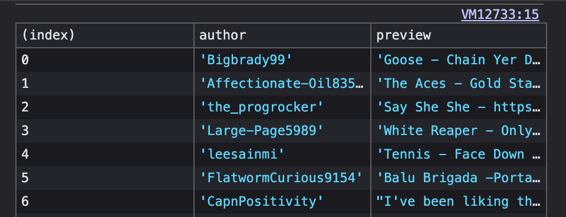

Handy little JS script: "scrape top-level Reddit comments"
Like the title says, this is a simple little JS script to scrape the top-level comments on a Reddit thread. Just plug 'n' play in dev console.

Like the title says, this is a simple little JS script to scrape the top-level comments on a Reddit thread. Just plug 'n' play in dev console.
